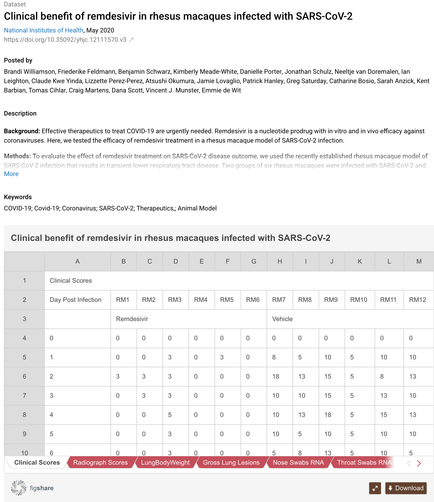

Epistemology of research data
Inferential networks
The NFDI4SD offers an entirely innovative approach to the epistemological analysis of research data. Even in data collections, research data are usually sorted into categories in logical isolation before being published, with no inferential relationships between the groupings. These types of research data are accessed through cataloguing tools such as filter categories. Viewed in an abstract space, research data can be visualised as differently coloured objects or "cubes", with similarities given by their spatial neighbourhoods. Similar research data can be searched by clustering the data according to their spatial distribution.
The NFDI4SD’s registry makes it easier for researchers to browse the ever-increasing proliferation of research data. It uses machine-learning methods to establish relationships – inferential relationships of all kinds, including those of provenance – between the data. Networks are created for all globally catalogued research data, so that the data can be harvested. The system is not only intended to be used by NFDI researchers: all scholars will be able to search for similar data sets on the internet, which can then be linked, such as the citation graphs of traditional publications.
Deep learning models reveal the content and classify the research data on which the argumentation of the publications is epistemically based: computational derivations, subject similarity, or the similarity between data types. These searches are initially being prepared for the small disciplines and offer substantial and specific support to the research projects. The NFDI4SD’s registry has created a unique epistemic knowledge graph for research data.
These information graphs are fundamental to global research data collaborations.
Epistemic qualification
The rapid and wide dissemination publication of research data related to COVID-19 is evidence of the urgent demand for an automated meta-analysis of published data. But even in this research field – the opposite of a small discipline – very little secondary research data has been published. A survey carried out by dimensions.ai (dated 22.09. 2020) lists 5,564 publications on the use of remdesivir to treat COVID-19 patients, with 128 clinical trials, but only seven data sets.

These data sets are small in size and low in complexity:

Secondary research data for the small disciplines are similar in composition and as such they are ideally suited to Zenodo’s data repository. With its computer interface of NFDI4SD, researchers can access the data and their paratext directly and then analyse them with sophisticated methodological tools. The latter will be studied, developed and published by the NFDI4SD, and they will allow hotly debated issues to be resolved. They include:
- Is research data reproducible?1
- Which raw data should be used?
- Do the research data justify the thesis?
- Which other research data support or refute the given research data?
One of the services offered by the NFDI4SD is to address and implement the epistemological issues concerning research data.
Impact Analysis
The usage relationships between research data reveal the impact that research findings have on other research work. These features are mainly used to assess the interest shown in individual research items. Impact analysis will provide information about important data dependencies and identify those data sets that have been particularly closely examined as well as other epistemic qualifications. It will also give information on the empirical foundations of hypothesis and the lack of sufficient evidence.
-
Replication literature ↩